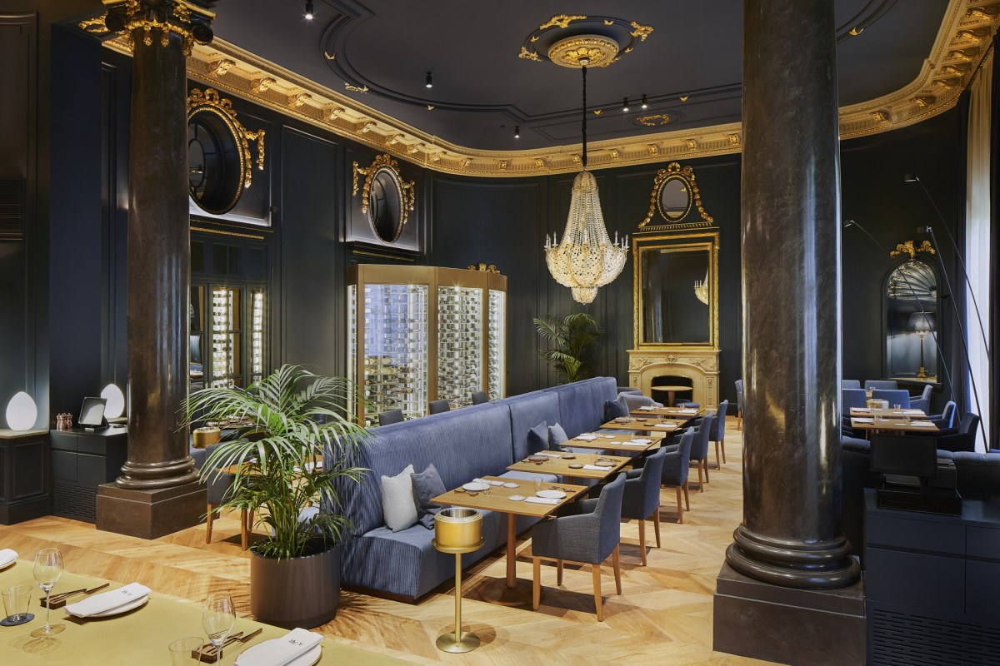
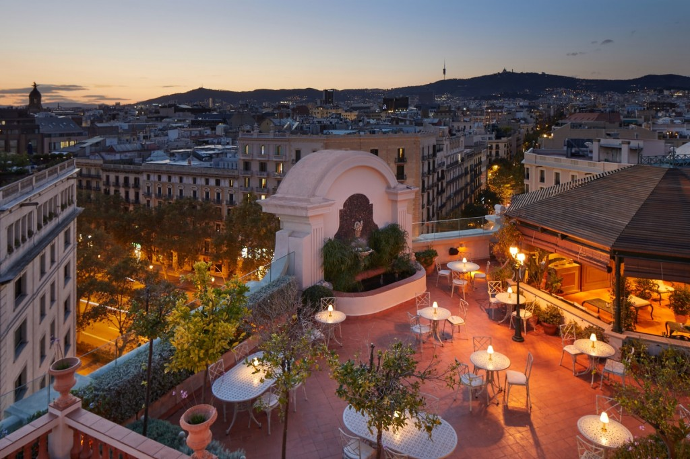

<div class="container-fluid" data-aos="fade-in">
    <div class="row justify-content-end">
        <div class="d-block-text">
            <div class="display-table">
                <div class="display-table-cell">
                    <p class="p-section">Perfect stays</p>
                    <!-- <h2 class="title t-italic">Oh là là!</h2> -->
                    <h2 class="title">Rooms</h2>

                    <p>The bounty of the Mediterranean is on display in Pula Nala Lodge. Treat your palate to the
                        same luxury as your eyes with our seasonal menus made using local, seasonal ingredients and
                        flavours.</p>

                    <a href="" class="underline" title="LEARN MORE">
                        <span>LEARN MORE</span><svg viewBox="0 0 13 20">
                            <polyline points="0.5 19.5 3 19.5 12.5 10 3 0.5" />
                        </svg>
                    </a>

                </div>
            </div>
        </div>
        <div class="col-12 p-0 d-block-slider">
            <div class="carousel-blocks">
                <div class="carousel-cell">
                    <picture>
                        <source data-srcset="../../../assets/scheduling/Amar_barcelona_restaurant_H0_1.thigh.jpg"
                            type="image/webp" srcset="">
                        
                    </picture>
                    <p class="counter"><span>1</span>/6</p>
                    <div class="d-block text-center">
                        <p class="p-section">room 1</p>
                        <h2 class="title t-italic">
                            <a class="">Selemita</a>
                        </h2>
                        <!--
        <h2 class="title"><?/*= $title */?></h2>
    -->
                        <div class="p-text">Pula Nala Lodge has a new gastronomic seafood restaurant in partnership
                            with Rafa Zafra. Honest cuisine, based on the quality of the product, providing a casual and
                            relaxed touch to a luxurious and elegant setting. The new gastronomic venue of Barcelona.
                            Opened on Abril 26th</div>

                        <a class="underline">
                            <span>Read more</span><svg viewBox="0 0 13 20" width="13" height="20">
                                <polyline points="0.5 19.5 3 19.5 12.5 10 3 0.5" />
                            </svg>
                        </a>
                    </div>
                </div>

                <div class="carousel-cell">
                    <picture>
                        <source
                            data-srcset="../../../assets/slider/View-from-Rooftop-Garden-El-Palace-Barcelona.tmedium.webp"
                            type="image/webp" srcset="">
                        
                    </picture>
                    <p class="counter"><span>2</span>/6</p>
                    <div class="d-block text-center">
                        <p class="p-section">room 2</p>
                        <h2 class="title t-italic">
                            <a class="">Nthabi</a>
                        </h2>
                       
                        <div class="p-text">If you would like a bird’s-eye view over Barcelona, look no further than the
                            rooftop garden. From a matchless setting on the flower-covered rooftop of El Palace
                            Barcelona, you can enjoy a panoramic view of the city all year round, which is gorgeous both
                            day and night.</div>

                        <a class="underline">
                            <span>Read more</span><svg viewBox="0 0 13 20" width="13" height="20">
                                <polyline points="0.5 19.5 3 19.5 12.5 10 3 0.5" />
                            </svg>
                        </a>
                    </div>
                </div>